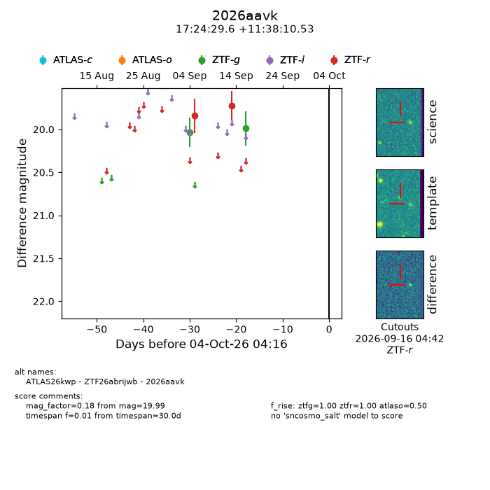
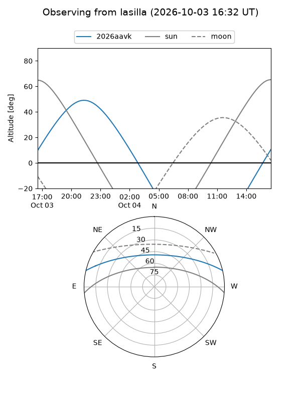
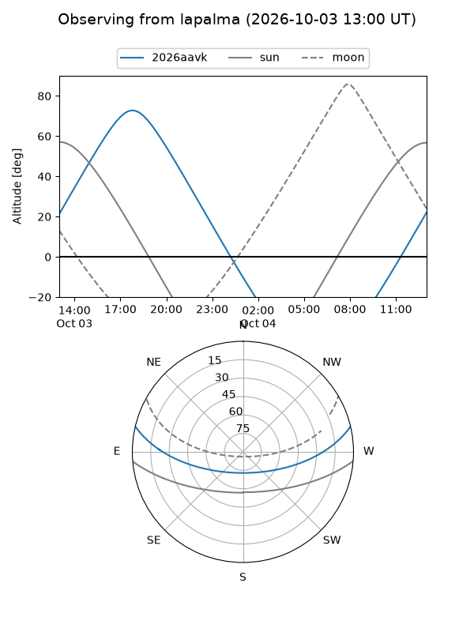
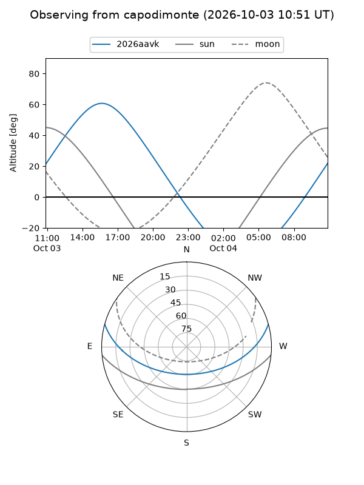

2026aavk
Target 2026aavk at 2026-10-04 04:18
Aliases and brokers:
FINK-ZTF: ztf.fink-portal.org/ZTF26abrijwb
Lasair-ZTF: lasair-ztf.lsst.ac.uk/objects/ZTF26abrijwb
ALeRCE-ZTF: alerce.online/object/ZTF26abrijwb
YSE-PZ: ziggy.ucolick.org/yse/transient_detail/2026aavk
TNS name: wis-tns.org/object/2026aavk
Direct TNS query: direct search
alt names
ZTF26abrijwb (ztf,fink_ztf)
2026aavk (tns,yse)
ATLAS26kwp (atlas)
Coordinates:
equatorial (ra, dec) = 261.1235,+11.63626
equatorial (HMS+DMS) = 17:24:29.64,+11:38:10.53
galactic (l, b) = (33.8207,+24.50586)
Flags:
TNS type: nan
peak dt: +3.4
Photometry:
last atlaso=nan, ztfg=19.99, ztfr=19.72
1 atlaso, 2 ztfg, 2 ztfr detections
Lightcurve

Visibility



Additional plots